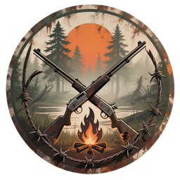
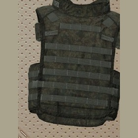

Грань ЗакатаДобро пожаловать туда, где жизнь. На Грани заката.

Это помощник к основному сайту сервера: схемы крафта, деревья компонентов и подсказки, где искать материалы. Без неона — только то, что нужно выжившему у костра.
Сейчас открыт первый рецепт — бронежилет тактический 6Б45. Выберите его в разделе крафта, раскройте ветку и наведите на любой компонент.
Открыть крафт 6Б45Предмет, компоненты и количество. Если деталь тоже крафтится — ветка раскрывается дальше.
ГайдыРаздел готовится: сюда пойдут цены торговцев и выгодные обмены.
Наведите курсор на компонент — появится, где его искать. Нажмите «+», если у предмета есть свой рецепт.